Sprint 3
1. INSTAL·LACIÓ DOMINI LDAP
per a fer la base del domini (arbre de directori), a traves dels arxius .ldif o a traves de comanda.
Fem un ping a google per comprovar la conexió ethernet.
Desprès, fem un sudo apt update per actualitzar els canvis.

Configurem amb una contrasenya per l'administrador:
Confirmem la contrasenya:
Per comprovar els canvis la comanda:
Hem d'executar aquesta comanda en root, sinò ens enviarà un error d'insuficients permisos.
1.2 Crear una UO
Amb crearem el nostre arxiu de l'unitat organitzativa dels usuaris
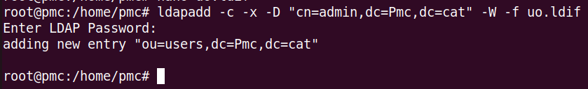1.3 Crear Usuaris
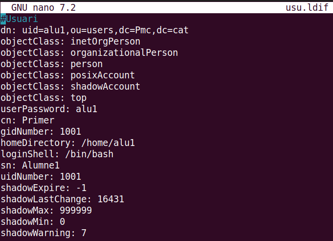Utilitzem la mateixa comanda amb el nou arxiu .ldif
1.4 Crear Grup
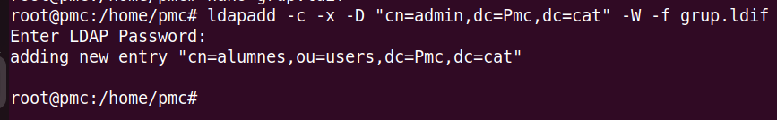
1.4.1 Comprovació
Finalment, fem la comprovacio amb sudo slapcat.
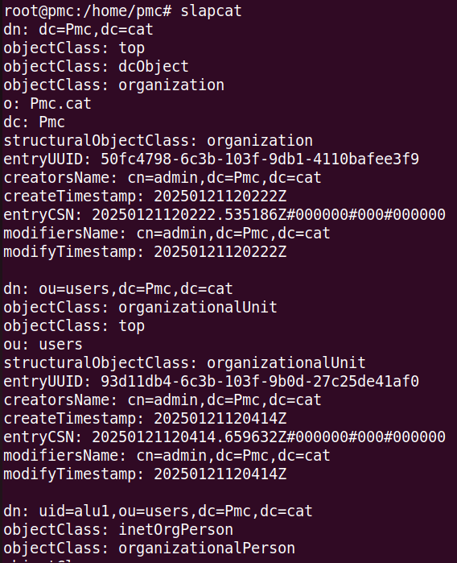
2. UNIR EQUIPS DOMINI
Amb la comanda sudo su abrim la nostra terminal amb l'usuari root.
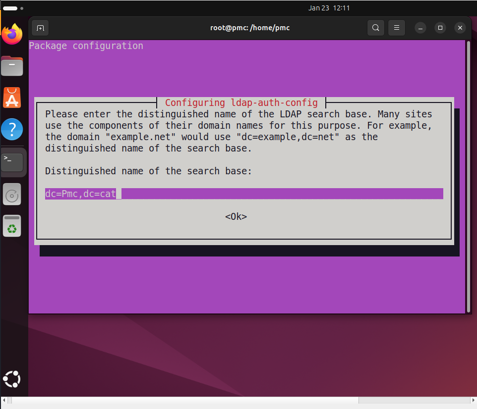

Sempre que quan lo client no es pugui validar al domini a part de comprovar fitxers, també farem sempre un reconfigure.
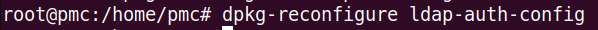
Reconfigurem els paràmetre que vulguem de cada pas i al final fem clic a "Ok" per continuar.
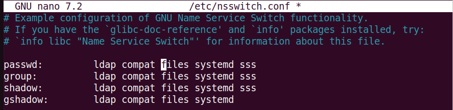3. GESTIÓ DEL DOMINI
3.1 Fitxers i comandes ldap
• Fes un altre slapcat per tal de comprovar que les dades s'han carregat correctament slapcat
Quantes uos hi ha? Quants usuaris hi ha al domini?
Podem veure que amb la comanda ldapsearch -xLLL -b "dc=domini,dc=domini" cn sn
Crea una nova uo anomenada asix
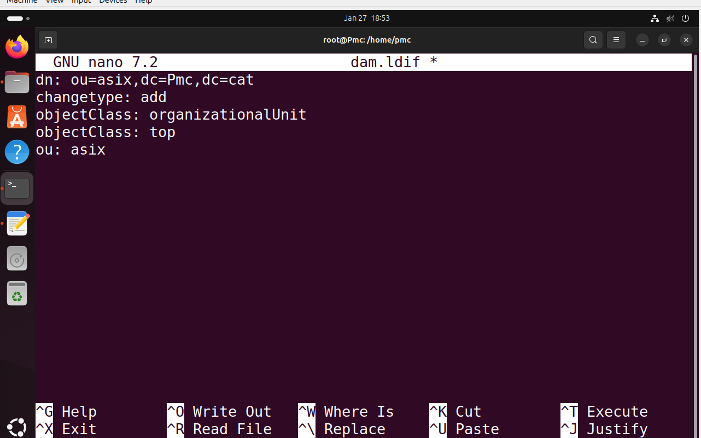
Esborra l’atribut roomnumber i homeDirectory de l’usuari ejohnson
L’usuari kvaughan en quants grups el trobem com a uniqueMember i quins són?
Amb la comanda ldapsearch -xLLL -b "dc=Pmc,dc=cat" uniqueMember=uid=kvaughan,ou=People,dc=Pmc,dc=cat podem buscar al usuari kvaughan per el seu uid i en quants grups el podem trobar com uniqueMember.
Trau de la uo People a 3 usuaris i afegeix-los a la uo asix
Si utilitzo la comanda ldapsearch -xLLL -b "dc=Pmc,dc=cat" dn ou=People, trobaré més fàcilement 3 usuaris per esborar

dn: uid=rdaugherty,ou=People,dc=Pmc,dc=cat
Com podem veure, si busquem per el seu uid, no surt la seva ou: People.
dn= uid=wlutz, ou=People,dc=Pmc,dc=cat
Com podem veure, si busquem per el seu uid, no surt la seva ou: People.
dn= uid=tward, ou=People,dc=Pmc,dc=cat
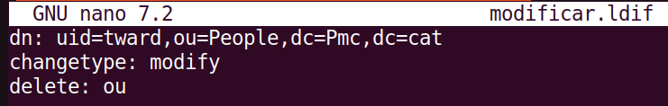
Quants grups hi ha dintre de la uo Groups?
Esborra la uo People
Modifica el uid de l’usuari hmiller a hamillerCrea un nou usuari amb dos atributs opcionals per a la classe posixAccount
Afegeix un parell més d’opcionals a l’usuari anterior
Modifica el mail de l’usuari jburrell per jburrell@gmail.com
Crea un nou grup dintre de la uo Groups i afegeix 3 usuaris

Treu del grup creat anteriorment a un usuari
Mostra tots els usuaris de la uo People que el seu uid comenci per la lletra k i formin part també de la uo Recursos Humans
Mostra tots els usuaris del domini on el seu uidNumber estigui entre 1010 i 1030 (inclosos). Quants en son?
Usuaris on el seu telèfon acabi en un 2 o el seu cognom en una n. Quants?
D’un sol cop, a l’usuari que tu vulguis, esborra un atribut, afegeix-ne un altre i modifica un tercer. 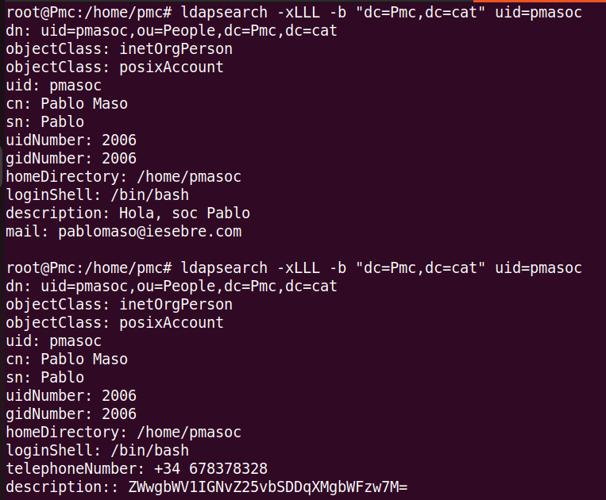
4. Entorns gràfics
4.1 phpLDAPadmin
4.1.1 Instal·lació
-
Instal·la'l amb:
sudo apt install phpldapadmin -
Edita /etc/phpldapadmin/config.php i defineix el servidor LDAP.
Edita el fitxer de configuració amb un editor de text:
sudo nano /etc/phpldapadmin/config.php
Modifica la secció de configuració del servidor. Busca la línia:
$servers->setValue('server','host','127.0.0.1');
i canvia 127.0.0.1 per la IP o el nom del teu servidor LDAP, en el meu cas:
$servers->setValue('server','host','ldap://10.0.2.15');
Configura el DN d’administrador i el base DN. Busca aquestes línies i edita-les segons la teva configuració LDAP:
$servers->setValue('login','bind_id','cn=admin,dc=Pmc,dc=cat');
$servers->setValue('server','base',array('dc=Pmc,dc=cat'));
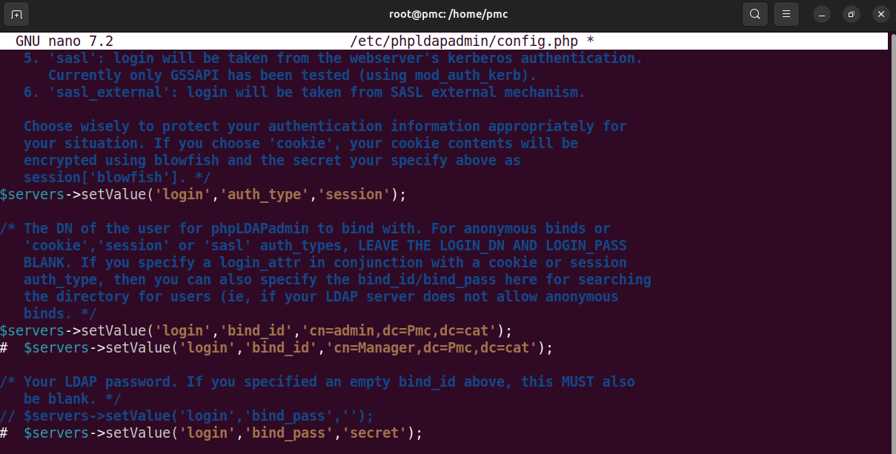
Permet autenticació amb contrasenya (opcional, si necessites autenticació per login):
$servers->setValue('login','auth_type','session');
Guarda els canvis i surt de l'editor (CTRL+X, després Y i ENTER en nano)
Reinicia el servidor web perquè els canvis tinguin efecte:
sudo systemctl restart apache2
Desprès comprovem si el servei s'ha iniciat correctament.
sudo systemctl status apache2
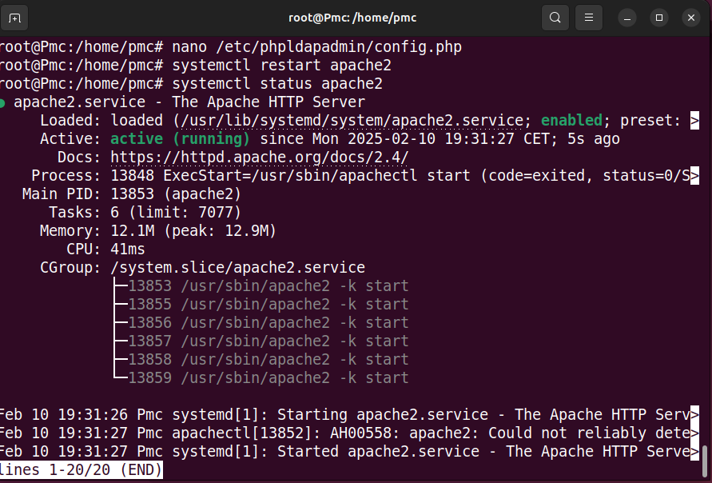
Accedeix a phpLDAPadmin a través del navegador:
http://10.0.2.15/phpldapadmin
4.1.2 Configuració
- Accedeix a http://IP_SERVIDOR/phpldapadmin.
- Autentica't amb
cn=admin,dc=exemple,dc=com.
Comprovació de l'arbre de directori
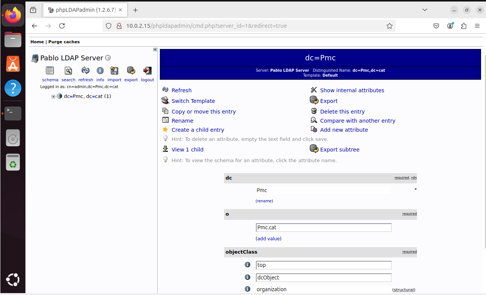
4.1.3 Creació d'OU, grup i usuari
- Afegeix
ou=serveis,dc=exemple,dc=com.

Note
Fem clic a Generic: Organisational Unit.
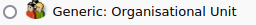
Fem clic a crear. 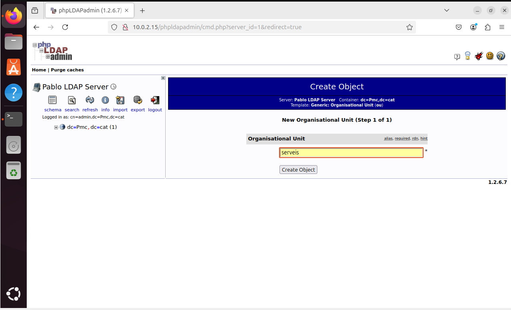
Finalment, realitzem un commit. 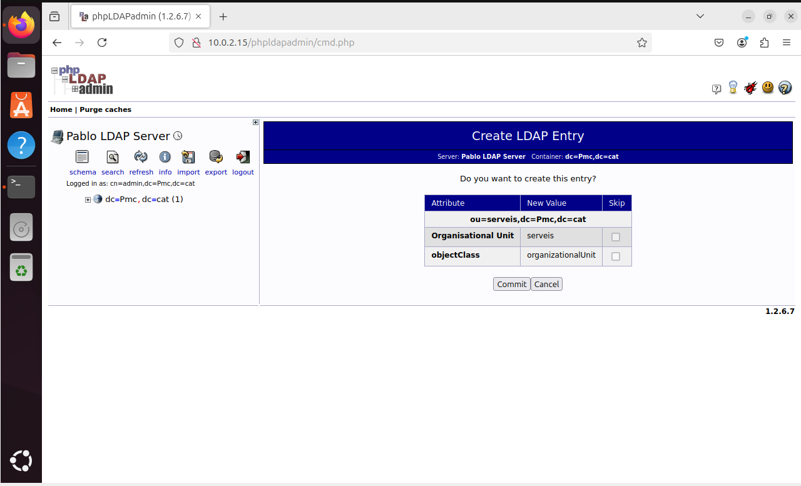
- Crea
cn=grup_hr,ou=serveis,dc=exemple,dc=com.
Aquesta vegada fem clic a Generic: Posix Group damunt de la ou=serveis.
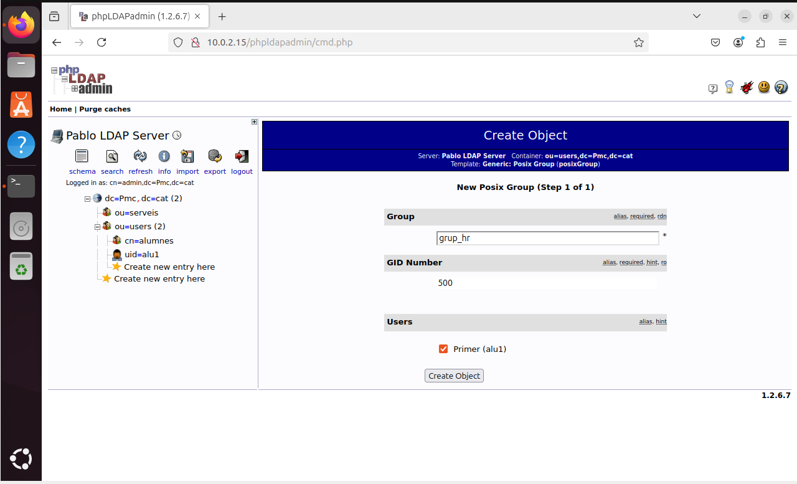
I afegim dintre del grup l'usuari alu1.

- Afegeix
uid=usuari3,ou=serveis,dc=exemple,dc=com.
Note
Aquesta vegada utilitzem el Generic: User Account.
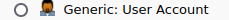
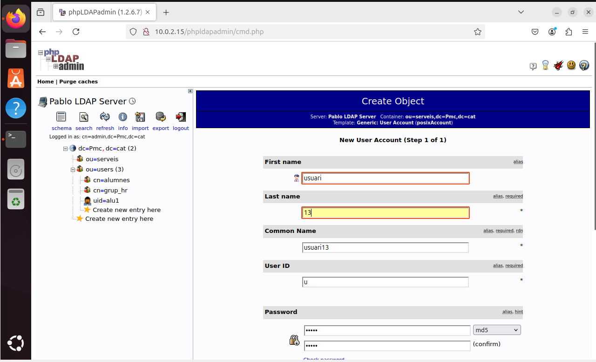
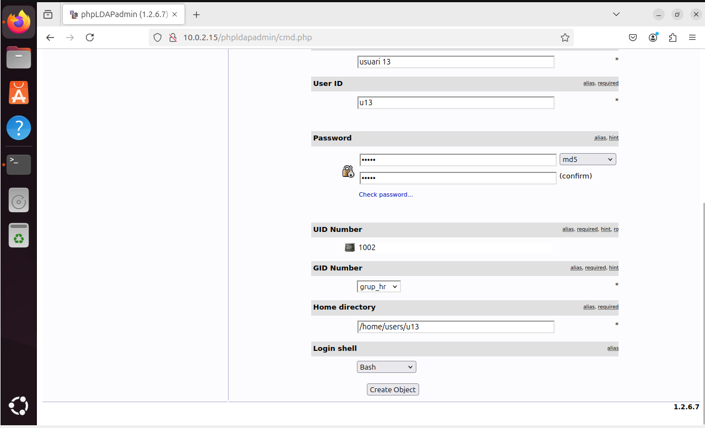
I ja tenim creat l'usuari:

4.1.4 Accés des del client
- Prova d'autenticar-se amb usuari3.
5. Servidor Samba
5.1 Teoria
Un servidor Samba, a diferència d'un servidor NFS, necessita una autenticació a nivell d'usuari. Samba permet la compartició de recursos, a més de carpetes, també impressores.
Samba pot treballar conjuntament amb LDAP per utilitzar els usuaris per a la validació
Samba permet clients de Windows i Linux.
5.2 Instal·lació Samba server
En primer lloc, utilitzem la comanda:
apt install samba
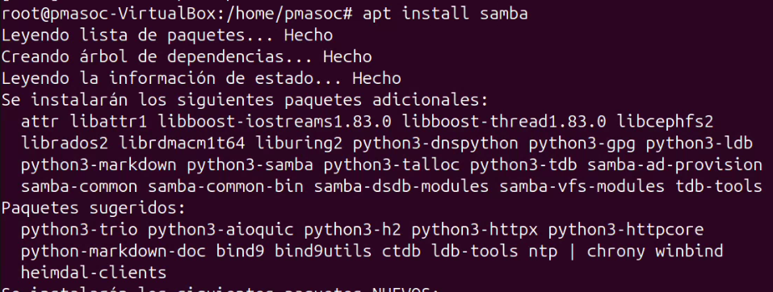
5.2.1 Configuració de Samba
Al acabar d'instal·lar el servei de Samba ens dirigim a la carpeta /etc/samba/smb.conf al final de tot de l'arxiu i afegim aquests paràmetres.
[perfils]
path= /perfils
guest ok = yes
directory mask = 0755
create mask = 0644
browseable = yes
read list = @dam
write list = raul
invalid users = enric
Ara, per aplicar els canvis de la configuració hem d'utilitzar la comanda systemctl restart smbd nmbd i systemctl status smbd nmbd per reiniciar i veure si s'han iniciat correctament els serveis.
systemctl restart smbd nmbd
systemctl status smbd nmbd
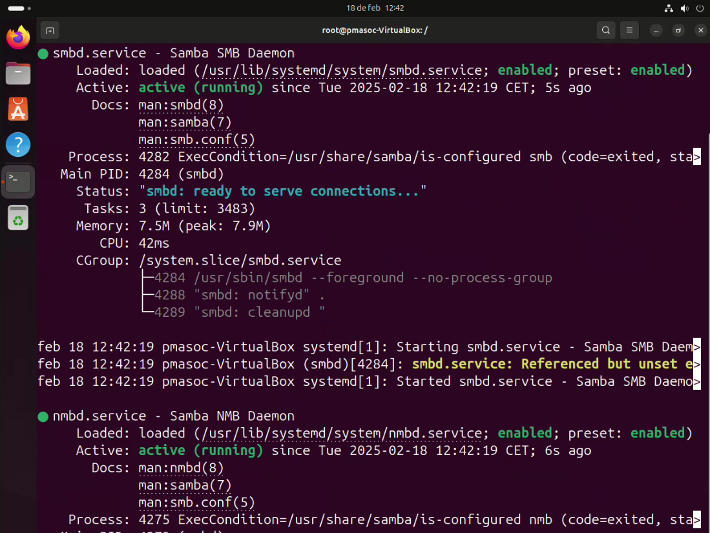
5.3 Creació dels usuaris per a Samba
A continuació, creem els usuaris que hem definit als paràmetres de configuració.
useradd -M -s /sbin/nologin raul
useradd -M -s /sbin/nologin enric
useradd -M -s /sbin/nologin walid
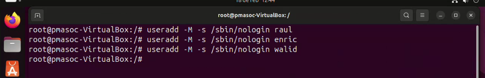
Amb tail -3 /etc/passwd podem veure els nous 3 usuaris creats recentment.
tail -3 /etc/passwd
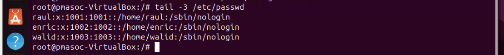
Seguint amb la configuració, creem un grup anomenat "dam" amb la comanda addgroup dam. Tot seguit, afegim als usuaris creats al grup dam amb la comanda adduser usuari dam.
adduser raul dam
adduser enric dam
adduser walid dam
Per comprovar els canvis, utilitzem al comanda tail -1 /etc/group per veure si els usuaris s'han afegit correctament.
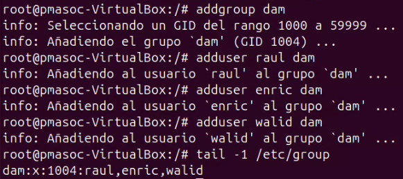
5.3.1 Afegir usuaris a Samba
Finalment, per afegir els usuaris creats a la màquina local per a Samba hem d'utilitzar la comanda smbpasswd -a usuari. Haurèm de canviar la contrasenya.
smbpasswd -a raul
smbpasswd -a enric
smbpasswd -a walid
5.4 Comprovació amb el client
Per vincular el client amb el servidor Samba s'utilitza apt install smbclient.

Obrim l'explorador d'arxius i ens dirigim a l'apartat de Otras ubicaciones. Dintre d'aqui, buscarem el nostres servidor amb la carpeta /perfils amb l'adreça smb://ipservidor/perfils (en el meu cas és smb://10.0.2.15/perfils).
smb://10.0.2.15/perfils
Warning
En iniciar sessió amb un usuari recorda no modificar cap apartat que no sigui Nombre usuario o Contraseña i selecciona sempre Olvidar contraseña immediatamente per no tindre futurs problemes.
Com anteriorment he ficat als paràmetres que pot haver-hi un usuari anònim provem a accedir amb ell.
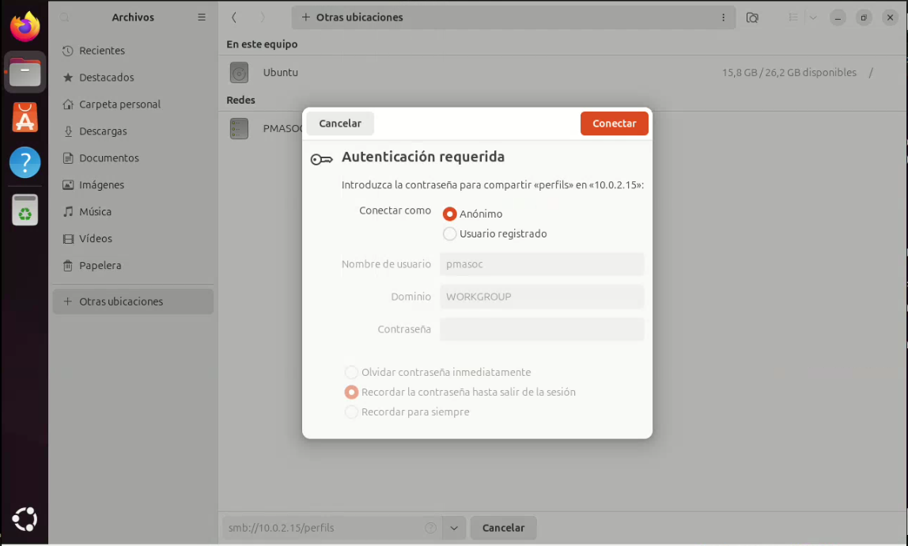
Provem a crear una nova carpeta i ens dona accès denegat:
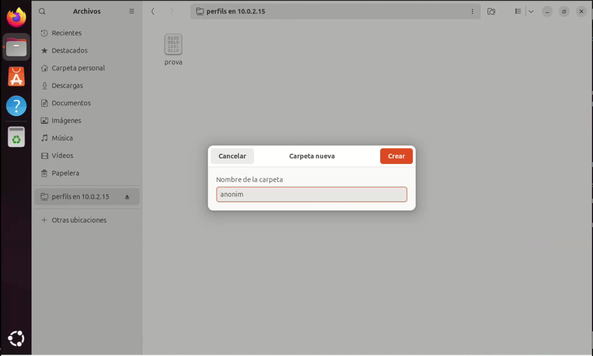
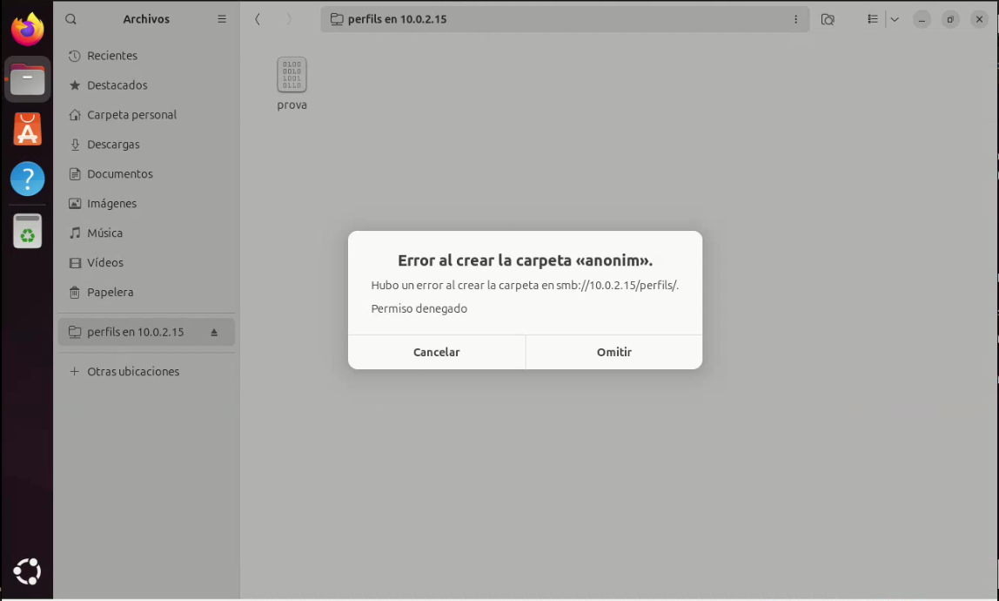
Info
Si accedim amb un altre usuari que no tingui restriccions així podrem crear arxius i modificar-los al nostre plaer. D'altra banda, altres usuaris que tinguin restringits l'accés a la carpeta podran intentar iniciar sessió. Però no podran accedir a la carpeta compartida.
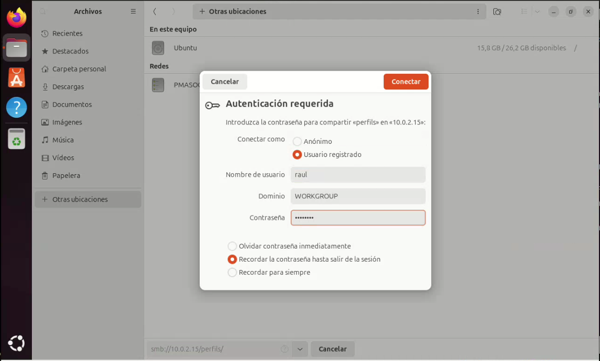
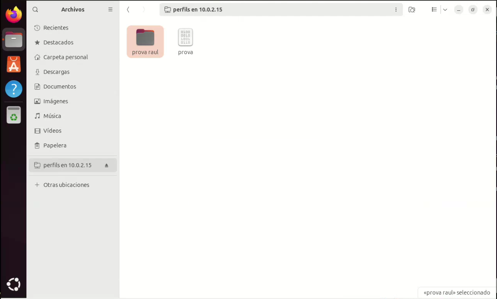
Com podem veure, al utilitzar ls -l podem veure que el creador de la carpeta compartida de Samba és l'usuari raul:
ls -l
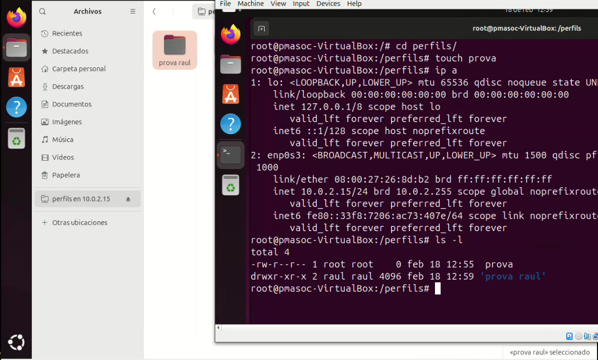
6. Perfils mòbils
6.1 Configuració en el servidor LDAP:
Note
Abans fer qualsevol instal·lació, utilitzem la comanda
sudo apt update
Comanda inicial per instal·lar el servei de kernel:
apt install nfs-kernel-server
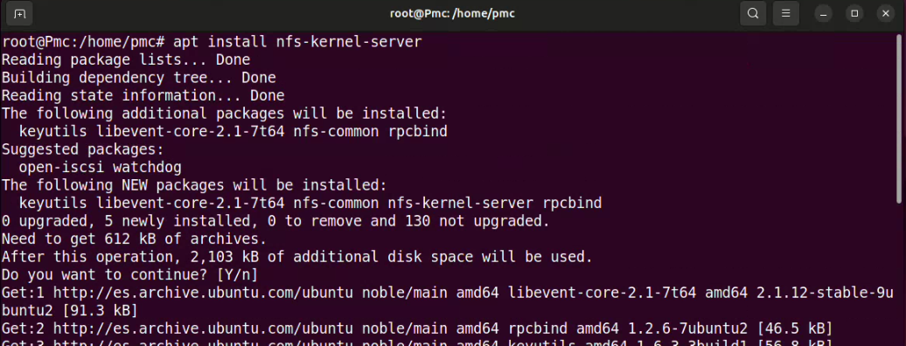
Seguidament:
cd /
mkdir perfils
chmod 777
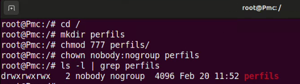
Obrim el fixer /etc/exports:
nano /etc/exports
I afegim aquesta línia dintre:
/perfils *(rw,sync,no_root_squash,no_subtree_check)
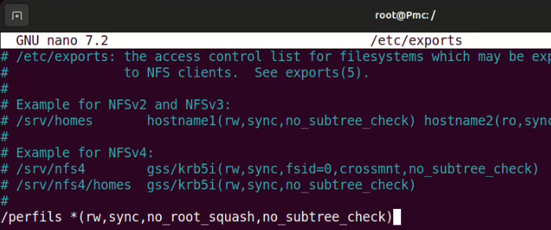
Molt important, per reiniciar el servei del kernel, utilitzem la comanda:
systemctl restart nfs-kernel-server
systemctl status nfs-kernel-server
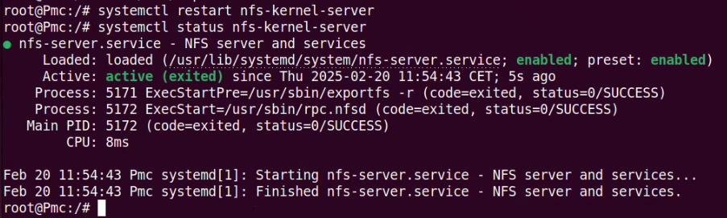
Dintre de l'arxiu grup.ldif afegim les següents línies (en el meu cas):
PER CREAR GRUP:
dn: cn=dam,dc=Pmc,dc=cat
objectClass: posixGroup
objectClass: top
cn: dam
gidNumber: 1100
memberUid: alu54
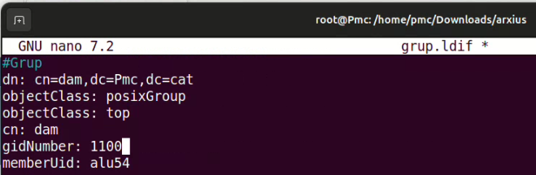
Finalment, per aplicar els canvis utilitzem la següent comanda (jo amb els meus paràmetres)
ldapadd -c -x -D "cn=admin,dc=Pmc,dc=cat" -W -f grup.ldif
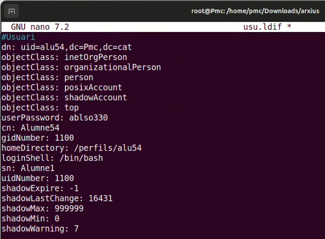
Ara, dintre de l'arxiu usu.ldif afegim les següents línies (en el meu cas):
dn: uid=alu54, ou=dam,dc=Pmc,dc=cat
objectClass: inetOrgPerson
objectClass: organitzationalPerson
objectClass: person
objectClass: posixAccount
objectClass: shadowAccount
objectClass: top
userPassword: ablso330
cn: Alumne54
gidNumber: 1100
homeDirectory: /perfils/alu54
loginShell: /bin/bash
sn: Alumne1
uidNumber: 1100
shadowExpire: -1
shadowLastChange: 16431
shadowMax: 999999
shadowMin: 0
shadowWarning: 7
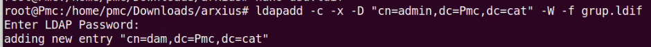
Per acabar, per aplicar els canvis utilitzem la següent comanda (jo amb els meus paràmetres)
ldapadd -c -x -D "cn=admin,dc=Pmc,dc=cat" -W -f usu.ldif
PER CREAR USUARI DINTRE DE GRUP:
alumne54 per exemple.
homeDirectory: /perfils/alu54
Finalment, per carregar l'arxiu ldap fem:
ldap -c -x -D “cn=admin,dc,dc” -W -f grup | usuari

6.2 Configuració del client LDAP
Note
Abans fer qualsevol instal·lació, utilitzem la comanda
sudo apt update
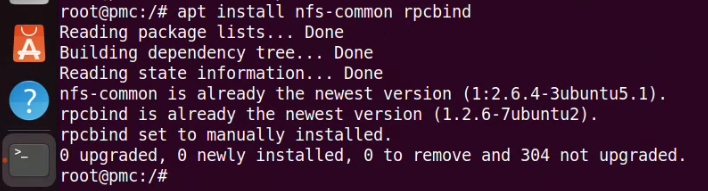
Seguidament:
cd /
mkdir perfils
chmod 777
ls -l | grep perfils
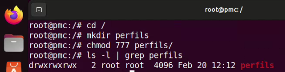
Entrem a configurar l'arxiu /etc/fstab amb la comanda:
nano /etc/fstab
A més, dintre de l'arxiu afegim la següent llínea:
Per acabar, reiniciem la màquina per comprovar si s'han aplicat els canvis.